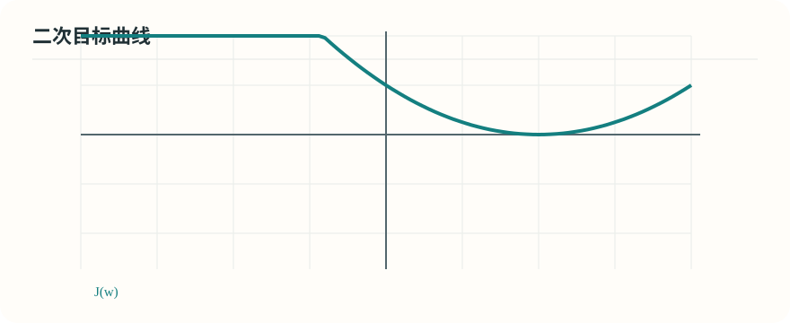
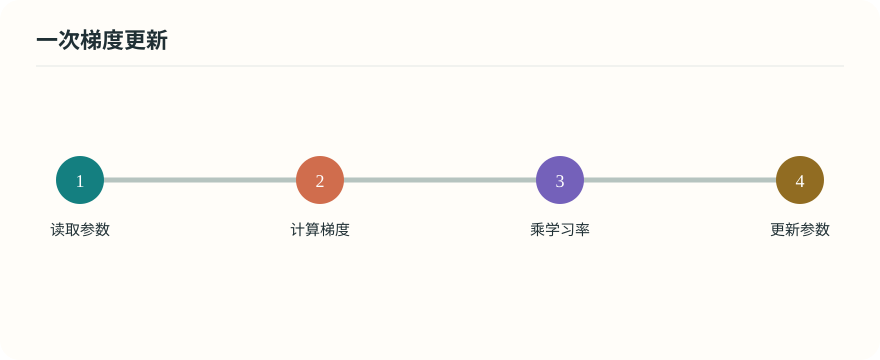
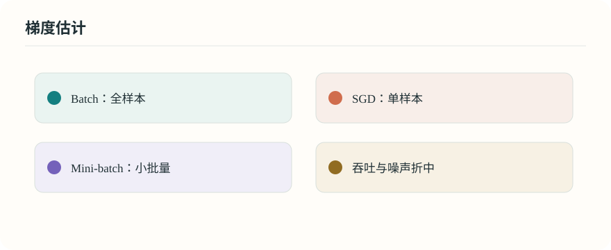
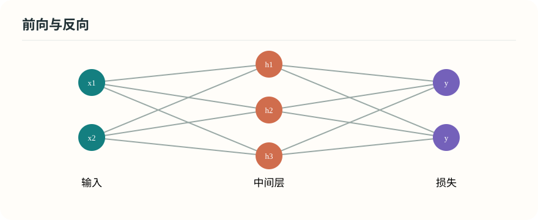
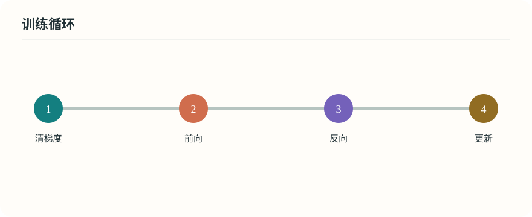
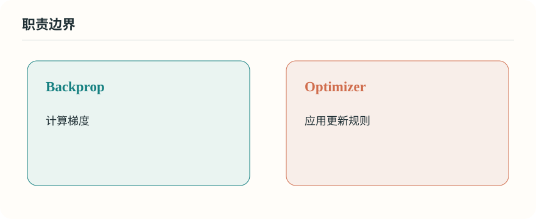

深度前馈网络 · MODULE 02
梯度下降：参数如何一步步学会
把反向传播、梯度与优化器分开理解，训练过程就清楚了。
神经网络训练不是让模型自己变好，而是定义目标、计算梯度，再按照优化规则更新参数。
核心问题
神经网络训练不是让模型自己变好，而是定义目标、计算梯度，再按照优化规则更新参数。
1. 先写成优化问题
模型由参数 θ 控制，训练目标 J(θ) 衡量模型在训练数据上的表现。训练就是在参数空间中寻找较小的目标值。

2. 梯度描述局部变化
梯度由各参数偏导数组成，指向局部上升最快的方向。沿负梯度移动，在足够小的步长下通常使目标下降；这不是全局最优保证。
3. 梯度下降更新
当前参数减去学习率乘以梯度。学习率控制步长，不是模型能力的评分。

4. 学习率决定轨迹
学习率太小会推进缓慢；太大可能跨越低谷、震荡或发散。用 J(w)=(w−2)² 可以直观看到步长如何改变轨迹。
5. Batch、SGD 与 Mini-batch
批量梯度使用全数据；随机梯度每次使用一个样本；小批量使用一组样本，在梯度噪声和硬件吞吐之间折中。

6. 反向传播不是优化器
反向传播用链式法则高效计算梯度；SGD、Momentum、Adam 等优化器接收梯度并更新参数。两者职责不同。

7. 训练循环四步
清空旧梯度、前向计算、反向求导、优化器更新。若不清梯度，框架可能累加旧梯度。

8. 梯度下降的边界
非凸目标可能有鞍点、局部极小值和病态曲率。动量、自适应优化器和学习率调度可以改善训练，但不能消除所有困难。

交互实验
从 w₀=−3 出发，改变学习率并观察六步迭代。
从 w₀=−3 出发，改变学习率并观察六步迭代。
交互用于核对公式与数值关系；不是完整训练基准。
可运行示例
w=-3.0
for _ in range(40):
grad=2*(w-2)
w-=0.1*grad
print(w, (w-2)**2)参考资料
教材结论、论文结论与本页推导分别标注；图示为独立绘制。